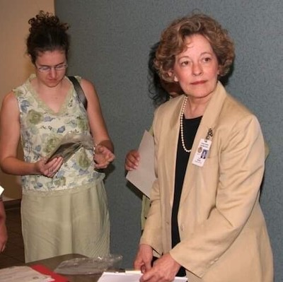

Cecelia Burke
#aa6440
Tax Assessor-Collector
Cecelia Burke was Travis County’s first elected female Travis County Tax-Assessor,
a position she held from 1985 to 1991. During her time in office,
she recruited and mentored Nelda Wells Spears and Tina Morton, two women who
each would later serve as the county Tax-Assessor Collector.
After her time in office, Ms. Burke continued her work in the public sector,
later managing the Domestic Relations Office for the Travis County District Judges.
Similar to the office of Constable, there was an earlier appointed Tax Assessor,
Mrs. Viola Miller, who was appointed to the office in 1914. Miss Carrie Hill held the related position of Tax Collector, also in 1914.
1985-1991